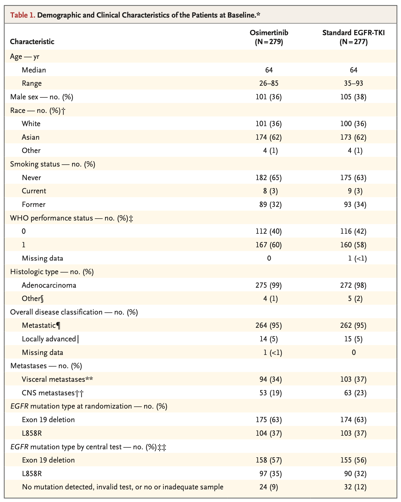

Show the code
library(here)
library(dplyr)
library(survival)
library(mice)
library(MatchThem)
library(MatchIt)
library(survey)
library(gtsummary)
# calling functions
source(here::here("functions", "source_encore.io_functions.R"))This is a reproducible example on how to incorporate population weights to match distributions of a target population in multiple imputation > matching/weighting > balance assessment > outcome analysis workflows.
Load packages:
library(here)
library(dplyr)
library(survival)
library(mice)
library(MatchThem)
library(MatchIt)
library(survey)
library(gtsummary)
# calling functions
source(here::here("functions", "source_encore.io_functions.R"))We use the simulate_flaura() function to simulate a realistic oncology comparative effectiveness cohort analytic dataset.
# load example dataset with missing observations
data_miss <- simulate_flaura(
n_total = 3500,
treat_prevalence = .51,
seed = 41,
include_id = FALSE,
imposeNA = TRUE
) |>
# we have to convert sex and ecog into a factor variable
# since anesrake doesn't accept 0/1 numeric encoding for
# binary variables
mutate(across(c(dem_sex_cont, c_ecog_cont), function(x) factor(as.character(x))))
covariates <- data_miss |>
select(starts_with("c_"), starts_with("dem_")) |>
colnames()Multiple imputation using mice:
# impute data
data_imp <- futuremice(
parallelseed = 42,
n.core = 7,
data = data_miss,
method = "rf",
m = 10,
print = FALSE
)Warning in check.cores(n.core, available, m): 'n.core' exceeds the maximum
number of available cores on your machine or the number of imputations, and is
set to 3Before applying the re-weighting, we need to define the target distributions of patient characteristics that we want to match from the clinical trial using the raking procedure. The following distributions are taken from Table 1 of the FLAURA trial.

# Define FLAURA distributions for key covariates --------------------------
# order is as in Table 1
## sex ---------------------------------------------------------------------
# female (0) to male (1) proportion:
sex_target <- c(.63, .37)
names(sex_target) <- c("0", "1")
## race --------------------------------------------------------------------
# asian, non-asian
# asian (TRUE) to non-asian (FALSE) proportion
# note: logical variables in dataframe can be matched to a numeric vector of length 2 and ordered with the TRUE target as the first element and the FALSE target as the second element.
race_target <- c(.62, .38)
## smoking -----------------------------------------------------------------
# current/former smoker (TRUE) to never smoker (FALSE) proportion
# note: logical variables in dataframe can be matched to a numeric vector of length 2 and ordered with the TRUE target as the first element and the FALSE target as the second element.
smoker_target <- c(.35, .65)
## ecog --------------------------------------------------------------------
# ecog 0 by exposure
avg_prop_ecog0 <- .41
# ecog 0 to ecog 1 proportion
ecog_target <- c(.41, .59)
names(ecog_target) <- c("0", "1")
# summarize target distributions in a named list vector --------------
targets <- list(sex_target, race_target, smoker_target, ecog_target)
names(targets) <- c("dem_sex_cont", "dem_race", "c_smoking_history", "c_ecog_cont")
# print
targets$dem_sex_cont
0 1
0.63 0.37
$dem_race
[1] 0.62 0.38
$c_smoking_history
[1] 0.35 0.65
$c_ecog_cont
0 1
0.41 0.59 In this step, propensity score matching and re-weighting of key patient characteristics to match those of the original RCT is performed across all imputed datasets.
The propensity score model is specified as follows:
# apply propensity score matching on mids object
ps_form <- as.formula(paste("treat ~", paste(covariates, collapse = " + ")))
ps_formtreat ~ c_smoking_history + c_number_met_sites + c_ecog_cont +
c_stage_initial_dx_cont + c_hemoglobin_g_dl_cont + c_urea_nitrogen_mg_dl_cont +
c_platelets_10_9_l_cont + c_calcium_mg_dl_cont + c_glucose_mg_dl_cont +
c_lymphocyte_leukocyte_ratio_cont + c_alp_u_l_cont + c_protein_g_l_cont +
c_alt_u_l_cont + c_albumin_g_l_cont + c_bilirubin_mg_dl_cont +
c_chloride_mmol_l_cont + c_monocytes_10_9_l_cont + c_eosinophils_leukocytes_ratio_cont +
c_ldh_u_l_cont + c_hr_cont + c_sbp_cont + c_oxygen_cont +
c_neutrophil_lymphocyte_ratio_cont + c_bmi_cont + c_ast_alt_ratio_cont +
c_time_dx_to_index + c_de_novo_mets_dx + c_height_cont +
c_weight_cont + c_dbp_cont + c_year_index + dem_age_index_cont +
dem_sex_cont + dem_race + dem_region + dem_sesThe matching and re-weighting is performed using the re_weight() function. This function is a wrapper for matchit() and weightit() in combination with the anesrake() function which performs the raking (= re-weighting) procedure.
We apply this function to each imputed dataset. Before doing so, the imputed datasets, which are currently stored as a mids object, needs to be converted to a list of dataframes:
# create a mild object containing lists of data.frames
data_mild <- mice::complete(data = data_imp, action = "all", include = FALSE)
summary(data_mild) Length Class Mode
1 39 data.frame list
2 39 data.frame list
3 39 data.frame list
4 39 data.frame list
5 39 data.frame list
6 39 data.frame list
7 39 data.frame list
8 39 data.frame list
9 39 data.frame list
10 39 data.frame listThe lapply function loops the function through each dataframe and returns a list of matchit objects which contain imputed > matched > re-weighted datasets. To take advantage of the features that come with the cobalt and matchthem packages, the function stores the raking weights as sampling weights (s.weights).
# call match re-weight
matchit_out_list <- lapply(
# list of dataframes
X = data_mild,
# call function
FUN = re_weight,
# target distributions
targets = targets,
# should matching or weighting be performed
matching_weighting = "matching",
# matching arguments passed on to matchit() function
formula = ps_form,
ratio = 1,
method = "nearest",
distance = "glm",
link = "linear.logit",
caliper = 0.05,
replace = F
)[1] "Raking converged in 10 iterations"
[1] "Raking converged in 10 iterations"
[1] "Raking converged in 8 iterations"
[1] "Raking converged in 12 iterations"
[1] "Raking converged in 13 iterations"
[1] "Raking converged in 10 iterations"
[1] "Raking converged in 13 iterations"
[1] "Raking converged in 13 iterations"
[1] "Raking converged in 12 iterations"
[1] "Raking converged in 11 iterations"
[1] "Raking converged in 12 iterations"
[1] "Raking converged in 10 iterations"
[1] "Raking converged in 11 iterations"We can inspect the output of the first imputed > matched > re-weighted dataset.
matchit_out_list[[1]]A matchit object
- method: 1:1 nearest neighbor matching without replacement
- distance: Propensity score [caliper]
- estimated with logistic regression and linearized
- sampling weights not included in estimation
- caliper: <distance> (0.175)
- number of obs.: 3500 (original), 380 (matched)
- sampling weights: present
- target estimand: ATT
- covariates: c_smoking_history, c_number_met_sites, c_ecog_cont, c_stage_initial_dx_cont, c_hemoglobin_g_dl_cont, c_urea_nitrogen_mg_dl_cont, c_platelets_10_9_l_cont, c_calcium_mg_dl_cont, c_glucose_mg_dl_cont, c_lymphocyte_leukocyte_ratio_cont, c_alp_u_l_cont, c_protein_g_l_cont, c_alt_u_l_cont, c_albumin_g_l_cont, c_bilirubin_mg_dl_cont, c_chloride_mmol_l_cont, c_monocytes_10_9_l_cont, c_eosinophils_leukocytes_ratio_cont, c_ldh_u_l_cont, c_hr_cont, c_sbp_cont, c_oxygen_cont, c_neutrophil_lymphocyte_ratio_cont, c_bmi_cont, c_ast_alt_ratio_cont, c_time_dx_to_index, c_de_novo_mets_dx, c_height_cont, c_weight_cont, c_dbp_cont, c_year_index, dem_age_index_cont, dem_sex_cont, dem_race, dem_region, dem_sesTo check if the re-weighting process worked, we can extract the matched patients and compare a Table 1 that does not include the weights vs. a Table that considers the weights. For this example, we look at the first imputed > matched > re-weighted dataset.
# extract the matched of
first_dataset <- get_matches(
object = matchit_out_list[[1]]
)Reminder : The target distributions look like this
targets$dem_sex_cont
0 1
0.63 0.37
$dem_race
[1] 0.62 0.38
$c_smoking_history
[1] 0.35 0.65
$c_ecog_cont
0 1
0.41 0.59 library(cardx)
library(smd)
# print
first_dataset |>
tbl_summary(
by = treat,
include = names(targets)
) |>
add_difference(test = dplyr::everything() ~ "smd") |>
add_overall() |>
modify_column_hide(columns = "conf.low") |>
modify_header(
label ~ "**Patient characteristic**",
stat_0 ~ "**Total** <br> N = {round(N, 2)}",
stat_1 ~ "**{level}** <br> N = {round(n, 2)} <br> ({style_percent(p, digits=1)}%)",
stat_2 ~ "**{level}** <br> N = {round(n, 2)} <br> ({style_percent(p, digits=1)}%)"
) |>
modify_spanning_header(c("stat_1", "stat_2") ~ "**Treatment received**")Patient characteristic |
Total |
Treatment received |
Difference 2 |
|
|---|---|---|---|---|
0 |
1 |
|||
| dem_sex_cont | 0.03 | |||
| 0 | 253 (67%) | 128 (67%) | 125 (66%) | |
| 1 | 127 (33%) | 62 (33%) | 65 (34%) | |
| dem_race | 226 (59%) | 106 (56%) | 120 (63%) | -0.15 |
| c_smoking_history | 185 (49%) | 94 (49%) | 91 (48%) | 0.03 |
| c_ecog_cont | 0.01 | |||
| 0 | 175 (46%) | 88 (46%) | 87 (46%) | |
| 1 | 205 (54%) | 102 (54%) | 103 (54%) | |
| 1
n (%) |
||||
| 2
Standardized Mean Difference |
||||
# create survey object
data_svy <- svydesign(ids = ~ 1, weights = ~ weights, data = first_dataset)
# print
data_svy |>
tbl_svysummary(
by = treat,
include = names(targets)
) |>
add_difference(test = dplyr::everything() ~ "smd") |>
add_overall() |>
modify_column_hide(columns = "conf.low") |>
modify_header(
label ~ "**Patient characteristic**",
stat_0 ~ "**Total** <br> N = {round(N, 2)}",
stat_1 ~ "**{level}** <br> N = {round(n, 2)} <br> ({style_percent(p, digits=1)}%)",
stat_2 ~ "**{level}** <br> N = {round(n, 2)} <br> ({style_percent(p, digits=1)}%)"
) |>
modify_spanning_header(c("stat_1", "stat_2") ~ "**Treatment received**")Patient characteristic |
Total |
Treatment received |
Difference 2 |
|
|---|---|---|---|---|
0 |
1 |
|||
| dem_sex_cont | 0.03 | |||
| 0 | 239 (63%) | 119 (64%) | 120 (62%) | |
| 1 | 141 (37%) | 68 (36%) | 73 (38%) | |
| dem_race | 236 (62%) | 109 (58%) | 127 (66%) | -0.16 |
| c_smoking_history | 133 (35%) | 68 (36%) | 65 (34%) | 0.06 |
| c_ecog_cont | 0.06 | |||
| 0 | 156 (41%) | 80 (43%) | 76 (40%) | |
| 1 | 224 (59%) | 108 (57%) | 117 (60%) | |
| 1
n (%) |
||||
| 2
Standardized Mean Difference |
||||
matchthem()Lastly, we want to make sure that our custom function results in the same matched datasets as the matchthem() function which we use in the main analysis - not considering the re-weighting.
For this demonstration, we use the same matching parameters, but without re-weighting after matching in our custom function.
We run again our custom function but with targets = NULL to not re-weight any of the included covariates. To convert the returned output of a list of matchit objects into an object of type mimids we use the MatchThem::as.mimids() function.
# call match re-weight
set.seed(42)
matchit_out_list <- lapply(
X = data_mild,
FUN = re_weight,
targets = NULL,
matching_weighting = "matching",
formula = ps_form,
ratio = 1,
method = "nearest",
distance = "glm",
link = "logit",
caliper = 0.05,
replace = F
)No target distributions specified, no re-weighting will be performed.
No target distributions specified, no re-weighting will be performed.
No target distributions specified, no re-weighting will be performed.
No target distributions specified, no re-weighting will be performed.
No target distributions specified, no re-weighting will be performed.
No target distributions specified, no re-weighting will be performed.
No target distributions specified, no re-weighting will be performed.
No target distributions specified, no re-weighting will be performed.
No target distributions specified, no re-weighting will be performed.
No target distributions specified, no re-weighting will be performed.# convert the output into a mimids object
data_mimids_from_function <- MatchThem::as.mimids(
x = matchit_out_list,
datasets = data_imp
)
data_mimids_from_functionPrinting | dataset: #1A matchit object
- method: 1:1 nearest neighbor matching without replacement
- distance: Propensity score [caliper]
- estimated with logistic regression
- caliper: <distance> (0.022)
- number of obs.: 3500 (original), 376 (matched)
- target estimand: ATT
- covariates: c_smoking_history, c_number_met_sites, c_ecog_cont, c_stage_initial_dx_cont, c_hemoglobin_g_dl_cont, c_urea_nitrogen_mg_dl_cont, c_platelets_10_9_l_cont, c_calcium_mg_dl_cont, c_glucose_mg_dl_cont, c_lymphocyte_leukocyte_ratio_cont, c_alp_u_l_cont, c_protein_g_l_cont, c_alt_u_l_cont, c_albumin_g_l_cont, c_bilirubin_mg_dl_cont, c_chloride_mmol_l_cont, c_monocytes_10_9_l_cont, c_eosinophils_leukocytes_ratio_cont, c_ldh_u_l_cont, c_hr_cont, c_sbp_cont, c_oxygen_cont, c_neutrophil_lymphocyte_ratio_cont, c_bmi_cont, c_ast_alt_ratio_cont, c_time_dx_to_index, c_de_novo_mets_dx, c_height_cont, c_weight_cont, c_dbp_cont, c_year_index, dem_age_index_cont, dem_sex_cont, dem_race, dem_region, dem_sesmatchthem() functionThe following code resembles the code we would use in the main analysis by implementing the generic matchthem() function.
# matching
set.seed(42)
data_mimids <- matchthem(
datasets = data_imp,
formula = ps_form,
ratio = 1,
method = "nearest",
distance = "glm",
link = "logit",
caliper = 0.05,
replace = F
)
Matching Observations | dataset: #1 #2 #3 #4 #5 #6 #7 #8 #9 #10data_mimidsPrinting | dataset: #1A matchit object
- method: 1:1 nearest neighbor matching without replacement
- distance: Propensity score [caliper]
- estimated with logistic regression
- caliper: <distance> (0.022)
- number of obs.: 3500 (original), 376 (matched)
- target estimand: ATT
- covariates: c_smoking_history, c_number_met_sites, c_ecog_cont, c_stage_initial_dx_cont, c_hemoglobin_g_dl_cont, c_urea_nitrogen_mg_dl_cont, c_platelets_10_9_l_cont, c_calcium_mg_dl_cont, c_glucose_mg_dl_cont, c_lymphocyte_leukocyte_ratio_cont, c_alp_u_l_cont, c_protein_g_l_cont, c_alt_u_l_cont, c_albumin_g_l_cont, c_bilirubin_mg_dl_cont, c_chloride_mmol_l_cont, c_monocytes_10_9_l_cont, c_eosinophils_leukocytes_ratio_cont, c_ldh_u_l_cont, c_hr_cont, c_sbp_cont, c_oxygen_cont, c_neutrophil_lymphocyte_ratio_cont, c_bmi_cont, c_ast_alt_ratio_cont, c_time_dx_to_index, c_de_novo_mets_dx, c_height_cont, c_weight_cont, c_dbp_cont, c_year_index, dem_age_index_cont, dem_sex_cont, dem_race, dem_region, dem_sesWe can now stack the datasets (= vertically append them) and compare the resulting 10 x 10 datasets for any differences:
waldo::compare(
MatchThem::complete(data_mimids_from_function),
MatchThem::complete(data_mimids)
)✔ No differences